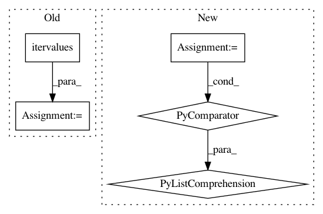

d520128e9440274835e92efabfce2c87996b0d45,lib/mpl_toolkits/axisartist/axislines.py,Axes,get_tightbbox,#Axes#Any#Any#,755
Before Change
bb = [bb0]
for axisline in list(six.itervalues(self._axislines)):
if not axisline.get_visible():
continue
bb.append(axisline.get_tightbbox(renderer))
// if axisline.label.get_visible():
// bb.append(axisline.label.get_window_extent(renderer))
// if axisline.major_ticklabels.get_visible():
// bb.extend(axisline.major_ticklabels.get_window_extents(renderer))
// if axisline.minor_ticklabels.get_visible():
// bb.extend(axisline.minor_ticklabels.get_window_extents(renderer))
// if axisline.major_ticklabels.get_visible() or \
// axisline.minor_ticklabels.get_visible():
// bb.append(axisline.offsetText.get_window_extent(renderer))
//bb.extend([c.get_window_extent(renderer) for c in artists \
// if c.get_visible()])
_bbox = Bbox.union([b for b in bb if b and (b.width!=0 or b.height!=0)])
return _bbox
After Change
bb0 = super().get_tightbbox(renderer, call_axes_locator)
if not self._axisline_on:
return bb0
bb = [bb0] + [axisline.get_tightbbox(renderer)
for axisline in self._axislines.values()
if axisline.get_visible()]
bbox = Bbox.union([b for b in bb if b and (b.width!=0 or b.height!=0)])
return bbox
In pattern: SUPERPATTERN
Frequency: 3
Non-data size: 5
Instances
Project Name: matplotlib/matplotlib
Commit Name: d520128e9440274835e92efabfce2c87996b0d45
Time: 2018-03-04
Author: anntzer.lee@gmail.com
File Name: lib/mpl_toolkits/axisartist/axislines.py
Class Name: Axes
Method Name: get_tightbbox
Project Name: polyaxon/polyaxon
Commit Name: df2089b7132ced1f1c5322b338f686840f947438
Time: 2018-04-15
Author: mouradmourafiq@gmail.com
File Name: polyaxon_schemas/utils.py
Class Name:
Method Name: pvalues
Project Name: brian-team/brian2
Commit Name: 8d60cb0e1b7d501cf774039f55b450e26cceb26b
Time: 2013-05-03
Author: marcel.stimberg@ens.fr
File Name: brian2/stateupdaters/exact.py
Class Name: LinearStateUpdater
Method Name: __call__